전기산업기사 (2007-08-05 기출문제)
1과목: 전기자기학
1. 자기인덕턴스가 L1, L2 이고 상호인덕턴스가 M인 두 회로의 결합계수가 1일 때, 다음 중 성립되는 식은?
- L1∙L2 = M
- L1∙L2 ＜ M2
- L1∙L2 ＞ M2
- L1∙L2 = M2
(정답률: 71%)

2. 그림과 같이 권수 N 회, 평균 반지름 r[m]인 환상솔레노이드에 I[A]의 전류가 흐를 때, 중심 0 점의 자계의 세기는 몇 [AT/m] 인가? (단, 누설자속은 없다고 함)
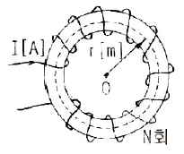
- 0
- NI
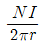
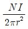
(정답률: 73%)
3. 구리 중에는 1cm3에 8.5× 1022 개의 자유전자가 있다. 단면적 2mm2의 구리선에 10A의 전류가 흐를 때의 자유전자의 평균속도는 약 몇 [cm/s]인가?
- 0.037
- 0.37
- 3.7
- 37
(정답률: 36%)
4. 비유전율 εr=2.8인 유전체에 전속밀도 D = 3.0× 10-7a[C/m2]를 인가할 때 분극의 세기 P는 약 몇 [C/m2] 인가? (단, 유전체는 등질 및 등방향성이라 한다.)
- 1.93× 10-7 a
- 2.93× 10-7 a
- 3.50× 10-7 a
- 4.07× 10-7 a
(정답률: 68%)
5.
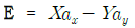
[V/m] 일 때 점(6, 2)[m]를 통과하는 전기력선의 방정식은?- y=12X
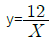
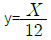
- y=12X2
(정답률: 74%)
6. 다음 중 실용상 영(0) 전위의 기준으로 가정 적합한 것은?
- 자유공간
- 무한 원점
- 철제부분
- 대지
(정답률: 73%)
7. 면적 19.6cm2, 두께 5mm의 판상 플라스틱 양면에 전극을 설치하고 그 정전용량을 측정하였더니 21.8pF 이었다. 이 재료의 비유전율은 약 얼마인가?
- 3.3
- 4.3
- 5.3
- 6.3
(정답률: 47%)
8. 공기 중에 10cm 떨어져 평행으로 늘여진 두 개의 무한히 긴 도선에 왕복전류가 흐를 때 단위 길이당 0.04N 의 힘이 작용한다면 이 때 흐르는 전류는 약 몇 [A] 인가?
- 58
- 62
- 83
- 141
(정답률: 61%)
9. 영구자석의 재료로 사용되는 철에 요구되는 사항으로 다음 중 가장 적절한 것은?
- 잔류자속밀도는 작고 보자력이 커야 한다.
- 잔류자속밀도는 크고 보자력이 작아야 한다.
- 잔류자속밀도와 보자력이 모두 커야 한다.
- 잔류자속밀도는 커야 하나, 보자력은 0 이어야 한다.
(정답률: 76%)
10. 권수 1회의 코일에 5Wb의 자속이 쇄교하고 있었다. 10-1초 사이에 이 자속이 0 으로 변하였다면 코일에 유도되는 기전력은 몇 [V] 가 되는가?(오류 신고가 접수된 문제입니다. 반드시 정답과 해설을 확인하시기 바랍니다.)
- 5
- 25
- 50
- 100
(정답률: 62%)
11. Q[C]의 전하를 갖는 반지름 a[m]의 도구체를 비유전율εs 인 기름탱크에서 공기 중으로 꺼내는 데 필요한 에너지는?(오류 신고가 접수된 문제입니다. 반드시 정답과 해설을 확인하시기 바랍니다.)
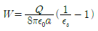
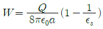
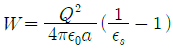
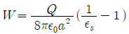
(정답률: 60%)
12. 그림과 같이 진공 중에 d[m] 떨어진 두 평행 도선에 I[A]의 전류가 흐를 때 도선의 단위길이당 작용하는 힘 F[N/m] 는?
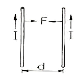
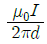
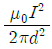
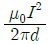
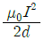
(정답률: 59%)
13. 백터의 계산에서 옳지 않은 것은?
- i∙i = j∙j = k∙k = 1
- i∙j = j∙k = k∙i = 0
- i× i = j× j = k× k = 1
- ∣A×B∣= AB sin θ
(정답률: 58%)
14. 다음 설명 중 옳은 것은?
- 상자성체는 자화율이 0 보다 크고, 반자성체에서는 자화율이 0 보다 작다.
- 상자성체는 투자율이 1 보다 작고, 반자성체에서는 투자율이 1보다 크다.
- 반자성체에서는 자화율이 0보다 크고, 투자율이 1보다 크다.
- 상자성체에서는 자화율이 0 보다 작고, 투자율이 1보다 크다.
(정답률: 54%)
15. 반지름 r 의 직선상 도체에 전류가 고르게 흐를 때 도체내의 전자 에너지와 관계가 없는 것은?
- 투자율
- 도체의 단면적
- 도체의 길이
- 전류의 크기
(정답률: 43%)
16. 두 자성체 경계면에서 정자계가 만족하는 것은?
- 자계의 법선 성분이 같다.
- 자속 밀도의 접선성분이 같다.
- 경계면상의 두 점간의 자위차가 같다.
- 자속은 투자율이 작은 자성체에 모인다.
(정답률: 76%)
17. 비유전율 4, 비투자율 1인 공간에서 전자파의 전파속도는 몇 [m/s] 인가?
- 0.5× 108
- 1.0× 108
- 1.5× 108
- 2.0× 108
(정답률: 65%)
18. 어떤 코일의 인덕턴스를 측정하였더니 4H 이고, 여기에 직류전류 I[A]를 흘려주니 이 코일에 축적된 에너지가 10J 이었다면 전류 I 는 몇 [A]인가?
- 0.5
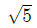
- 5
- 25
(정답률: 76%)
19. 전자계에 대한 맥스웰(Maxwell)의 기본 이론으로 옳지 않은 것은?
- 전도전류와 변위전류는 자계의 회전을 발생시킨다.
- 자속밀도의 시간적 변화에 따라 전계의 회전이 생긴다.
- 고립된 자극이 존재한다.
- 전하에서 전속선이 발생한다.
(정답률: 77%)
20. 0.2Wb/m2 의 자계 중에 이것과 직각으로 길이 30cm 도선을 놓고 이것을 자계와 직각으로 20m/s의 속도로 이동할 때, 도선 양단의 기전력은 몇 [V]인가?
- 0.6
- 1.2
- 3
- 6
(정답률: 69%)
2과목: 전력공학
21. 송전단 전압 161kV, 수전단 전압 154kV, 상차각 60도, 리액턴스 45Ω 일 때 선로손실을 무시하면 전송전력은 약몇 [MW] 인가?
- 397
- 477
- 563
- 624
(정답률: 69%)
22. 중거리 송전선로의 T 형 회로에서 송전단 전류 Is는? (단, Z,Y 는 선로의 직렬임피던스와 병렬어드미턴스이고, Er은 수전단 전압, Ir은 수전단 전류이다.)
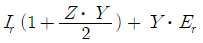
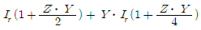
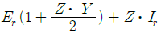
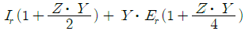
(정답률: 47%)
23. 다음은 수압관 내의 평균 유속을 V[m/s], 사용량을 Q[m3/s]라 하고, 관의 직경을 D[m] 라고 하면 사용유량 Q를 구하는 식은?
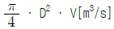
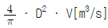
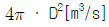
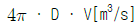
(정답률: 48%)
24. 소호 원리에 따른 차단기의 종류 중에서 소호실에서 아크에 의한 절연유 분해 가스의 흡부력(吸付力)을 이용하여 차단하는 것은?
- 유입차단기
- 기중차단기
- 자기차단기
- 가스차단기
(정답률: 61%)
25. 가공 왕복선 배치에서 지름이 d[m]이고 선간거리가 D[m]인 선로 한 가닥의 작용 인피던스는 몇 [mH/km] 인가? (단, 선로의 투자율은 1이라 한다.)
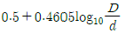
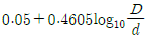
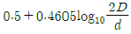
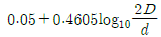
(정답률: 65%)
26. 3상 수직배치인 선로에서 오프셋을 주는 이유로 가장 알맞은 것은?
- 단락 방지
- 철탑 중량 감소
- 난조 방지
- 유도장해 감소
(정답률: 73%)
27. 단상승압기 1대를 사용하여 승압할 경우 승압 전의 전압을 E1 이라 하면, 승압 후의 전압 E2는 어떻게 되는가? (단, 승압기의 변압비는
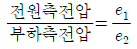
이다.)(오류 신고가 접수된 문제입니다. 반드시 정답과 해설을 확인하시기 바랍니다.)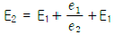
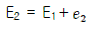
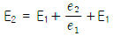
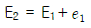
(정답률: 61%)
28. 연간 최대수용전력이 70kW, 75kW, 85kW, 100kW인 4개의 수용가를 합성한 연간 최대수용전력이 250kW이다. 이 수용가의 부등률이 얼마인가?
- 1.11
- 1.32
- 1.38
- 1.43
(정답률: 70%)
29. 다음 중 지락전류의 크기가 최소인 중성점 접지방식은?
- 비접지방식
- 소호 리액터접지방식
- 직접접지방식
- 고저항접지방식
(정답률: 59%)
30. 총 설비부하가 120kW, 수용률이 65%, 부하역률이 80%인 수용가에 공급하기 위한 변압기의 최소 용량은 약 몇[kVA] 인가?
- 40
- 60
- 80
- 100
(정답률: 57%)
31. 저항 2Ω, 유도리액턴스 10Ω의 단상 2선식 배선전로의 전압 강하를 보상하기 위하여 용량리액턴스 5Ω의 콘덴서를 삽입하였을 때 부하단 전압은 몇 [V] 인가? (단, 전원은 7000V, 부하전류 200A, 역률은 0.8(뒤짐)이다.)
- 6080
- 7000
- 7080
- 8080
(정답률: 53%)
32. 보호계전기에 동작 전류가 적은 동안에는 동작 전류가 커질수록 동작 시간이 짧게 되고, 그 이상이면 동작 전류의 크기에 관계없이 일정한 시간에서 동작하는 특성을 무슨 특성이라 하는가?
- 정한시성 특성
- 반한시성 특성
- 순한시성 특성
- 반한시성 정한시성 특성
(정답률: 73%)
33. 다음 중 동일전력을 수송할 때 다른 조건은 그대로 두고 역률을 개선한 경우의 효과로 옳지 않은 것은?
- 선로변압기 등의 저항손이 역률의 제곱에 반비례하여 감소한다.
- 변압기, 개폐기 등의 소요 용량은 역률에 비례하여 감소한다.
- 선로의 송전용량이 그 허용전류에 의하여 제한될 때는 선로의 송전 용량도 증가한다.
- 전압 강하는
 에 비례하여 감소한다.
에 비례하여 감소한다.
(정답률: 47%)
34. 중유 연소 기력발전소의 공기과잉율은 어느 정도인가?
- 0.⑤
- 1.⑤
- 2.38
- 3.45
(정답률: 62%)
35. 전선에서 전류의 밀도가 도선의 중심으로 들어갈수록 작아지는 현상은?
- 페란티효과
- 표피효과
- 근접효과
- 접지효과
(정답률: 77%)
36. 다음 중 송전선로의 안정도 향상 대책으로 적합하지 않은 것은?
- 계통의 전달 리액턴스를 증가시킨다.
- 계통의 전압 변동을 작게 한다.
- 계통에 주는 충격을 작게 한다.
- 고장시 발전기 입∙출력의 불평형을 작게 한다.
(정답률: 78%)
37. 전원이 양단에 있는 방사상 송전선로의 단락보호에 사용되는 계전기의 조합 방식은?
- 방향거리계전기와 과전압계전기의 조합
- 방향단락계전기와 과전류계전기의 조합
- 선택접지계전기와 과전류계전기의 조합
- 부족전류계전기와 과전압계전기의 조합
(정답률: 69%)
38. 전원으로부터 합성 임피던스가 0.5%(15000kVA 기준)인 곳에 설치하는 차단기 용량은 몇 [MVA] 이상이어야 하는 가?
- 2000
- 2500
- 3000
- 3500
(정답률: 66%)
39. 다음 중 핵연료의 특성으로 적합하지 않은 것은?
- 높은 융점을 가져야 한다.
- 낮은 열전도율을 가져야 한다.
- 부식에 강해야 한다.
- 방사선에 안정하여야 한다.
(정답률: 73%)
40. 송전선로의 중성점을 접지하는 목적으로 가장 옳은 것은?
- 전선 동량의 절약
- 전압강하의 감소
- 유도장해의 감소
- 이상전압의 방지
(정답률: 76%)
3과목: 전기기기
41. 동기 발전기에 앞선 전류가 흐를 때 옳은 것은?
- 감자 작용을 받는다.
- 증자 작용을 받는다.
- 속도가 상승한다.
- 효율이 좋아진다.
(정답률: 69%)
42. 직류기의 전기자 권선에 있어서 m중 중권일 때 내부 병렬회로수는 어떻게 되는가?
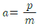
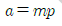
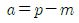
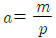
(정답률: 76%)
43. 100V, 10A, 전기자저항 1Ω, 회전수 1800rpm인 직류 전동기의 역기전력은 몇 V 인가?
- 120
- 110
- 100
- 90
(정답률: 61%)
44. 부흐홀쯔 계전기로 보호되는 기기는?
- 회전변류기
- 동기전동기
- 발전기
- 변압기
(정답률: 74%)
45. 변압기의 표유부하손 이란?
- 동손, 철손
- 부하전류 중 누전에 의한 손실
- 권선이외 부분의 누설 자속에 의한 손실
- 무부하시 여자전류에 의한 동손
(정답률: 47%)
46. 3상 유도전동기의 기동법 중 전전압기동에 대한 설명으로 옳지 않은 것은?
- 소용량 농형전동기의 기동법이다.
- 소용량의 농형전동기에서는 일반적으로 기동시간이 같다.
- 기동시에는 역률이 좋지 않다.
- 전동기 단자에 직접 정격전압을 가한다.
(정답률: 42%)
47. 3상 동기 발전기를 병렬운전 시키는 경우 생각하지 않아도 되는 조건은?
- 발생전압이 같다.
- 전압 파형이 같다.
- 회전수가 같다.
- 상회전이 같다.
(정답률: 56%)
48. 인버터(inverter)의 전력변환은?
- 교류 → 직류로 변환
- 직류 → 직류로 변환
- 교류 → 교류로 변환
- 직류 → 교류로 변환
(정답률: 69%)
49. 3상 유도전동기의 특성 중 비례추이를 할 수 없는 것은?
- 동기속도
- 2차전류
- 1차전류
- 역률
(정답률: 53%)
50. 출력 10HP, 600rpm 인 전동기의 토크는 약 몇 kg∙m인가? (단, 1HP = 746W 임)
- 11.8
- 118
- 12.1
- 121
(정답률: 63%)
51. Y결선 3상 동기발전기에서 극수 6, 1극의 자속수 0.16Wb, 회전수 1200rpm, 코일의 권수 186, 권선계수 0.96일 때 단자전압은 약 몇 V인가?
- 6591
- 9887
- 13182
- 19774
(정답률: 43%)
52. 3000V, 60Hz, 8극 100kW의 3상 유도전동기가 있다. 전부하에서 2차 동손이 3kW, 기계손이 2kW이라면 전부하 회전수는 약 몇 rpm 인가?
- 874
- 762
- 682
- 574
(정답률: 43%)
53. 송전선로에 접속된 동기 조상기의 설명 중 가장 옳은 것은?
- 과여자로 해서 운전하면 앞선전류가 흐르므로 리액터 역할을 한다.
- 과여자로 해서 운전하면 뒤진전류가 흐르므로 콘덴서 역할을 한다.
- 부족여자로 해서 운전하면 앞선전류가 흐르므로 리액터 역할을 한다.
- 부족여자로 해서 운전하면 송전선로의 자기 여자작용에 의한 전압상승을 방지한다.
(정답률: 53%)
54. 단상반파 정류로 직류전압 150V를 얻으려면 변압기 2차권선의 상전압 VS 를 약 몇 V 로 하면 되는가?
- 150
- 200
- 333
- 472
(정답률: 59%)
55. 단상 변압기를 병렬 운전할 경우에 부하 전류의 분담은 무엇에 관계되는가?
- 누설 리액턴스에 비례한다.
- 누설 리액턴스의 제곱에 비례한다.
- 누설 임피던스에 비례한다.
- 누설 임피던스에 반비례한다.
(정답률: 49%)
56. 직류전동기의 제동법 중 발전제동을 옳게 설명한 것은?
- 전동기가 정지할 때까지 제동토크가 감소하지 않는 특징을 지닌다.
- 전동기를 발전기로 동작시켜 발생하는 전력을 전원으로 반환함으로써 제동한다.
- 전기자를 전원과 분리한 후 이를 외부저항에 접속하여 전동기의 운동에너지를 열에너지로 소비시켜 제동 한다.
- 운전중인 전동기의 전기자접속을 반대로 접속하여 제동한다.
(정답률: 52%)
57. 다음은 SCR에 관한 설명이다. 적당하지 않은 것은?
- 3단자 소자이다.
- 스위칭 소자이다.
- 직류 전압만을 제어한다.
- 적은 게이트 신호로 대전력을 제어한다.
(정답률: 55%)
58. 변압기 유(油)의 열화에 따른 영향으로 옳지 않은 것은?
- 침식 작용
- 절연 내력의 저하
- 냉각 효과의 감소
- 공기 중 수분의 흡수
(정답률: 59%)
59. 다음 중 변압기의 등가회로를 작성하기 위하여 필요한 시험을 옳게 나타낸 것은?
- 상회전시험, 절연내력시험, 권선저항측정
- 온도상승시험, 절연내력시험, 무부하시험
- 온도상승시험, 절연내력시험, 권선저항측정
- 권선저항측정, 무부하시험, 단락시험
(정답률: 64%)
60. 4극 60Hz, 3상 권선형 유도 전동기에서 전부하 회전수는 1600rpm이다. 동일 토크를 1200rpm으로 하려면 2차 회로에 몇 Ω의 외부 저항을 삽입하면 되는가? (단, 2차 회로는 Y 결선이고, 각 상의 저항은 r2이다 .)
- r2
- 2r2
- 3r2
- 4r2
(정답률: 61%)
4과목: 회로이론
61. 100Ω의 저항에 흐르는 전류가 i=5+14.14 sint＋7.07 sin2t[A]일 때 저항에서 소비하는 평균 전력은 몇 W 인가?
- 20000
- 15000
- 10000
- 7500
(정답률: 56%)
62. 다음과 같은 비정현파 기전력 및 전류에 의한 전력[W]은? (단, 전압 및 전류의 순시 식은 다음과 같다.)
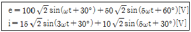
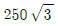
- 1000
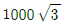
- 2000
(정답률: 48%)
63. 한 상의 임피던스 Z=6＋j8[Ω]인 평형 Y부하에 평형 3상전압 200[V]를 인가할 때 무효전력 [Var]은 약 얼마인가?
- 1330
- 1848
- 2381
- 3200
(정답률: 63%)
64. 1차 지연 요소의 전달함수는?
- K
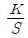
- KS
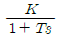
(정답률: 67%)
65. 그림과 같은 펄스의 라플라스 변환은 어느 것인가?
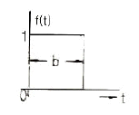
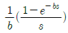
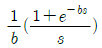
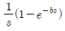
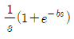
(정답률: 60%)
66. 대칭분을 I0, I1, I2라 하고, 선전류를 Ia, Ib, Ic라 할 때 역상분 전류는?
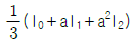
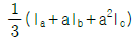
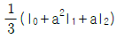
(정답률: 47%)
67. 대칭 3상 교류에서 순시전압의 백터 합은?
- 0
- 40
- 0.577
- 86.6
(정답률: 68%)
68. 를 라플라스 변환하여 전류 i(t)의 값을 구하면? (단, t = 0에서 이다. )
- -50ε-2t
- -50ε2t
- 50tε2t
- 50tε-2t
(정답률: 49%)
69. 그림과 같은 회로에서 Z1의 단자전압 , Z2의 단자전압 V2 = ∣V∣∠30°[V]일 때 y 및 ∣V∣의 값은?
- 1, 2
(정답률: 30%)
70. 단상 전력계 2개로 평형 3상 부하의 전력을 측정하였더니 각각 300W와 600W를 나타내었다. 부하역률은 약 얼마인가? (단, 전압과 전류는 정현파이다.)
- 0.5
- 0.577
- 0.637
- 0.866
(정답률: 64%)
71. 그림에서 a, b 단자에 200V를 가할 때 저항 2Ω에 흐르는 I1전류은 몇 A 인가?
- 40
- 30
- 20
- 10
(정답률: 44%)
72. V = 96 ＋ j28[V], Z = 4 - j3[Ω] 이다. 전류 I[A]는? (단, 이다.)
- 20εjα
- 10εjα
- 20εjβ
- 10εjβ
(정답률: 44%)
73. 부동작 시간(dead time)요소의 전달함수는?
- K
- K/s
- Ke-Ls
- Ks
(정답률: 67%)
74. 그림과 같은 회로는?
- 미분회로
- 적분회로
- 가산회로
- 미분 적분회로
(정답률: 50%)
75. 그림과 같은 고역 여파기에서 공칭 임피던스 K[Ω] 및 차단 주파수 fc[kHz]는 얼마인가?
- 400, 약 25.9
- 460, 약 20.9
- 480, 약 18.9
- 500, 약 15.9
(정답률: 48%)
76. 기본파의 20%인 제3고조파와 30%인 제5고조파를 포함한 전류의 왜형률은?
- 0.50
- 0.36
- 0.33
- 0.26
(정답률: 70%)
77. 그림과 같은 회로가 정상 상태로 있을 때 t=0에서 S를 닫은 후 인덕턴스의 전위차 VL은 몇 V인가?
(정답률: 22%)
78. 그림과 같은 전류 파형에 있어서 0으로부터 π까지의 사이는 i = Imsinωt[A]로 π로부터 2π까지는 으로 주어진다. Im= 5A라 할 때 전류의 평균치는 약 몇 A인가?
- 0.234
- 0.342
- 0.432
- 0.512
(정답률: 39%)
79. RC저역 필터회로의 전달함수 G(jω)는 ω=0 일 때 얼마인가?
- 0
- 1
- 0.5
- 0.707
(정답률: 38%)
80. 3대의 단상변압기를 △ 결선으로 하여 운전하던 중 변압기 1대가 고장으로 제거하여 V결선으로 한 경우 공급할 수 있는 전력과 고장전 전력과의 비율[%]은 약 얼마인가?
- 57.7
- 50
- 60
- 67
(정답률: 76%)
5과목: 전기설비기술기준 및 판단 기준
81. 345kV 가공전선로를 제1종 특별고압 보안공사에 의하여 시설하는 경우에 사용하는 전선은 인장강도 77.47kN 이상의연선 또는 단면적 몇 [mm2] 이상의 경동연선이어야 하는가?
- 100
- 125
- 150
- 200
(정답률: 47%)
82. 600V 비닐절연전선을 사용한 저압 가공전선이 위쪽에서 상부 조영재와 접근하는 경우의 전산과 상부 조영재간의 이격거리는 몇 [m] 이상이어야 하는가?
- 1
- 1.5
- 2
- 2.5
(정답률: 42%)
83. 다음 중 사용전압이 400[V] 미만이고 옥내 배선을 시공한 후 점검할 수 없는 은폐 장소이며, 건조된 장소일 때 공사 방법으로 가장 옳은 것은?
- 플로어 덕트 공사
- 버스 덕트 공사
- 합성 수지 몰드 공사
- 금속 덕트 공사
(정답률: 33%)
84. 병원, 진료소 등의 진찰, 검사, 치료 또는 감시 등의 의료 행위를 하는 의료실내에 시설하는 의료기기의 금속제외함에 보호접지를 하는 경우 그 접지저항값은 몇 [Ω]이하로 하여야 하는가? (단, 등전위 접지는 고려하지 않는 경우이다.)
- 5
- 10
- 30
- 50
(정답률: 56%)
85. 저압전로에서 그 전로에 지락이 생겼을 경우에 0.5초 이내에 자동적으로 전로를 차단하는 장치를 시설하는 경우에 자동차단기의 정격감도전류가 200mA이면 특별 제3종접지 공사의 저항값은 몇 [Ω] 이하로 하여야 하는가? (단, 전기적 위험도가 높은 장소인 경우이다.)
- 30
- 50
- 75
- 150
(정답률: 44%)
86. 옥외 백열전등의 인하선으로 지표상의 높이 몇 [m] 미만의 부분은 전선에 지름 1.6mm의 연동선과 동등이상의 세기 및 굵기의 절연전선을 사용하여야 하는가?
- 2.5
- 3
- 3.5
- 4
(정답률: 50%)
87. 인가가 많이 연접되어 있는 장소에 시설하는 가공전선로의 구성재 중 고압 가공전선로의 지지물 또는 가섭선에 적용하는 풍압하중에 대한 설명으로 옳은 것은?
- 갑종풍압하중의 1.5배를 적용시켜야 한다.
- 갑종풍압하중의 2배를 적용시켜야 한다.
- 병종풍압하중을 적용시킬 수 있다.
- 갑종풍압하중과 을종풍압하중 중 큰 것만 적용시킨다.
(정답률: 47%)
88. 욕탕의 양단에 판상의 전극을 설치하고 그 전극 상호간에 미약한 교류전압을 가하여 입욕자에게 전기적 자극을 주는 전기욕기를 시설할 때 전기욕기용 전원장치로부터 욕탕안의 전극까지의 전선 상호간 및 전선과 대지 사이의 절연 저항값은 몇 [MΩ] 이상이어야 하는가?
- 0.1
- 0.5
- 1
- 5
(정답률: 53%)
89. 가로등, 경기장, 공장, 아파트 단지 등의 일반조명을 위하여 시설하는 고압방전등은 그 효율이 몇 [lm/W] 이상의 것이어야 하는가?
- 60
- 70
- 80
- 90
(정답률: 66%)
90. 특별고압 절연전선을 사용한 22900V 가공전선과 안테나의 이격(수평이격) 거리는 몇 [m] 이상 이어야 하는가? (단, 중성선 다중접지식의 것으로 전로에 지락이 생겼을 때에는 2초 이내에 자동적으로 이를 전로로부터 차단하는 장치가 되어 있음)
- 1.0
- 1.2
- 1.5
- 2.0
(정답률: 33%)
91. 고압용의 개폐기∙차단기∙피뢰기 기타 이와 유사한 기구로서 동작시에 아크가 생기는 것은 목재의 벽 또는 천정 기타의 가연성 물체로부터 몇 [m] 이상 떼어 놓아야 하는가?
- 1
- 1.2
- 1.5
- 2
(정답률: 42%)
92. 지중 전선로를 직접 매설식에 의하여 차량 기타 중량물의 압력을 받을 우려가 있는 장소에 시설하는 경우 매설 깊이는 몇 [m] 이상으로 하여야 하는가?(오류 신고가 접수된 문제입니다. 반드시 정답과 해설을 확인하시기 바랍니다.)
- 1.0
- 1.2
- 1.5
- 2.0
(정답률: 60%)
93. 저∙고압 가공전선이 철도를 횡단하는 경우 레일면상 높이는 몇 [m] 이상이어야 하는가?
- 4
- 5
- 5.5
- 6.5
(정답률: 68%)
94. 특별고압 계기용변성기의 2차측 전로의 접지공사는?(관련 규정 개정전 문제로 여기서는 기존 정답인 1번을 누르면 정답 처리됩니다. 자세한 내용은 해설을 참고하세요.)
- 제1종 접지공사
- 제2종 접지공사
- 제3종 접지공사
- 특별 제3종 접지공사
(정답률: 36%)
95. 발∙변전소의 차단기에 사용하는 압축공기장치의 공기탱크는 사용압력에서 공기의 보급이 없는 상태에서 차단기의 투입 및 차단을 연속하여 몇 회 이상 할 수 있는 용량을 가져야 하는가?
- 1회
- 2회
- 3회
- 4회
(정답률: 50%)
96. 저압 옥내배선은 일반적인 경우, 지름 몇 [mm] 이상의 연동선이거나 이와 동등 이상의 세기 및 굵기의 것을 사용하여야 하는가?(관련 규정 개정전 문제로 여기서는 기존 정답인 1번을 누르면 정답 처리됩니다. 자세한 내용은 해설을 참고하세요.)
- 1.6
- 2.0
- 2.6
- 3.2
(정답률: 59%)
97. 다음 중 저압 옥내배선의 공사방법에 따른 사용전선의 조합으로 옳지 않은 것은?
- 애자사용은폐공사 - 600V 고무절연전선
- 가요전선관공사 - 600V 비닐절연전선
- 금속관공사 - 600V 불소수지절연전선
- 합성수지관공사 - 옥외용 비닐절연전선
(정답률: 56%)
98. 직류식 전기철도에서 귀선의 궤도 근접 부분에 1년간의 평균 전류가 통할 때, 그 구간 안의 어느 2점 사이에서의 전위차는 몇 [V] 이하이어야 하는가?
- 2
- 6
- 10
- 15
(정답률: 30%)
99. 다음 중 아크 용접장치의 시설 기준으로 옳지 않은 것은?
- 용접변압기는 절연변압기일 것
- 용접변압기의 1차측 전로의 대지전압은 400V 이하일 것
- 용접변압기 1차측 전로에서 용접 변압기에 가까운 곳에 쉽게 개폐할 수 있는 개폐기를 시설할 것
- 피용접재 또는 이와 전기적으로 접속되는 받침대∙정반 등의 금속체에는 제3종 접지공사를 할 것
(정답률: 57%)
100. 제1종 특별고압 보안공사에 의하여 시설한 154kV 가공송전선로는 전선에 지락 또는 단락이 생긴 경우에 몇 초 안에 자동적으로 이를 전로로부터 차단하는 장치를 시설하여야 하는가?
- 0.5
- 1
- 2
- 3
(정답률: 24%)
L1 = L11 + 2M
L2 = L22 + 2M
여기서 L11과 L22는 각각 자기인덕턴스가 1인 회로에서의 인덕턴스이고, M은 상호인덕턴스입니다.
이를 이용하여 L1∙L2을 계산하면 다음과 같습니다.
L1∙L2 = (L11 + 2M)∙(L22 + 2M)
= L11∙L22 + 2M(L11 + L22) + 4M2
= L11∙L22 + 2M(L11 + L22 + 2M)
= L11∙L22 + 4M2
여기서 L11∙L22은 각각 자기인덕턴스가 1인 회로에서의 인덕턴스의 곱이므로 1이 됩니다. 따라서,
L1∙L2 = 4M2
즉, L1∙L2과 M의 제곱은 같습니다. 따라서 정답은 "L1∙L2 = M2"입니다.